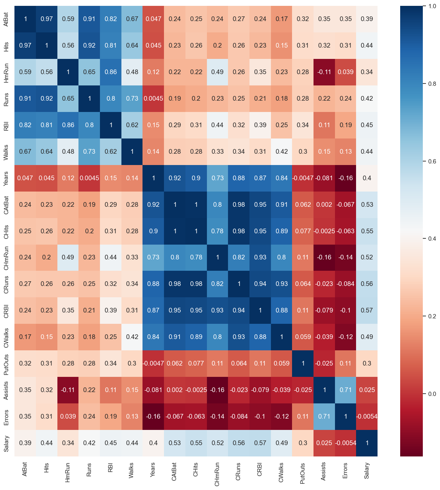
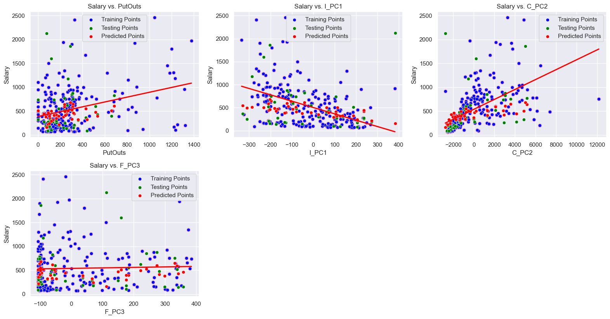
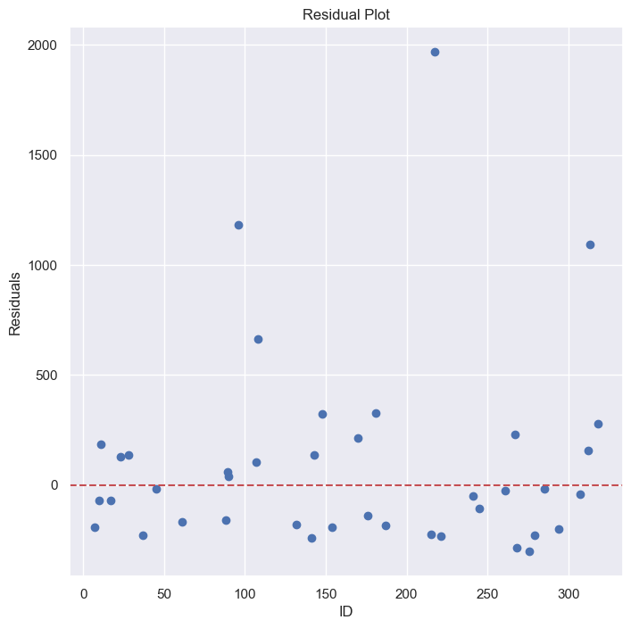
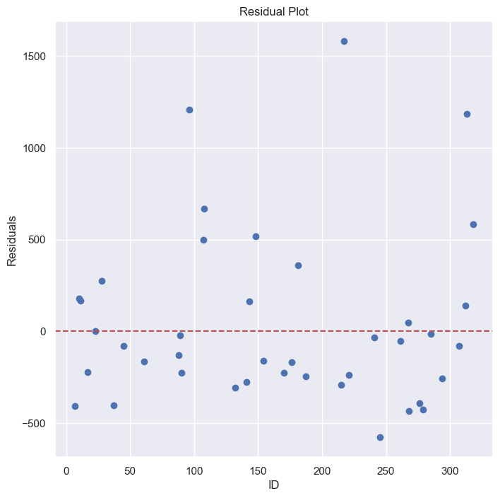

import matplotlib.pyplot as plt
import numpy as np
import pandas as pd
import seaborn as sns
from sklearn.svm import SVR
from sklearn.decomposition import PCA
from sklearn.model_selection import train_test_split
from sklearn.preprocessing import StandardScaler
from sklearn.metrics import mean_squared_errorData Analysis
Before plugging in the data into our SVM, it is important to evaluate redundant information to limit multicollinearity. We can find collinearities through the correlation matrix.
df = pd.read_csv("./Hitters.csv")
num_cols = [col for col in df.columns if df[col].dtypes != "O"]
corr = df[num_cols].corr()
sns.set(rc={'figure.figsize': (15, 15)})
sns.heatmap(corr, cmap="RdBu", annot=True)
plt.show()
Create Training and Test Sets
Since we’re trying to predict salary, I extract “salary” column from the dataframe, storing it into the label, and dropping that column from the feature data.
df = df_reduced
y = df["Salary"]
X = df.drop(columns="Salary")
X_train, X_test, y_train, y_test = train_test_split(X, y, test_size=0.15, random_state=42)
print(f"Salary STD: ${np.std(y) * 1000:,.2f}")
print(f"Salary Mean: ${np.mean(y) * 1000:,.2f}")
print(f"Salary Low: ${np.min(y) * 1000:,.2f}")
print(f"Salary High: ${np.max(y) * 1000:,.2f}")Salary STD: $450,260.22
Salary Mean: $535,925.88
Salary Low: $67,500.00
Salary High: $2,460,000.00Linear Support Vector Regression (kernel=“linear”)
sc = StandardScaler()
X_train_scaled = sc.fit_transform(X_train, y_train)
X_test_scaled = sc.fit_transform(X_test, y_test)
# pca_all = PCA(n_components=1)
# X_train_scaled_pca = pca_all.fit_transform(X_train_scaled)
# X_test_scaled_pca = pca_all.fit_transform(X_test_scaled)
svr_lin = SVR(kernel="linear", C=1, gamma="auto")
svr_lin.fit(X_train_scaled, y_train)
y_pred = svr_lin.predict(X_test_scaled)Visualize Multiple Linear Regression
plt.figure(figsize=(16, 12))
independent_variables = X_train.columns
dependent_variable = "Salary"
X_test_numpy = X_test.to_numpy()
for i, col in enumerate(independent_variables, 1):
plt.subplot(3, 3, i)
sns.regplot(x=X_train[col],y=y_train,ci=None,color ='red')
sns.scatterplot(data=X_train, x=col, y=y_train, color='blue', label='Training Points')
sns.scatterplot(data=X_test, x=col, y=y_test, color='green', label='Testing Points')
sns.scatterplot(data=X_test, x=col, y=y_pred, color='red', label='Predicted Points')
plt.title(f'{dependent_variable} vs. {col}')
plt.xlabel(col)
plt.ylabel(dependent_variable)
plt.tight_layout()
plt.show()
result_df = pd.DataFrame(columns=["id", "actual", "predicted"])
for i, actual, predicted in zip(y_test.index, y_test, y_pred):
entry = [i, actual, predicted]
df_entry = pd.DataFrame(entry, index=["id", "actual", "predicted"]).T
result_df = pd.concat((result_df, df_entry))
#print(result_df)
difference = abs(result_df["actual"] - result_df["predicted"])
print(f"Cumulative Difference: ${np.sum(difference) * 1000:,.2f}")
print(f"Min Difference: ${np.min(difference) * 1000:,.2f}")
print(f"Max Difference: ${np.max(difference) * 1000:,.2f}")
print(f"Average Difference: ${np.mean(difference) * 1000:,.2f}")
print(f"Std Difference: ${np.std(difference) * 1000:,.2f}")
print(f"Mean Squared Error: ${mean_squared_error(y_test, y_pred):,.2f}")Cumulative Difference: $10,792,084.13
Min Difference: $19,061.95
Max Difference: $1,968,301.30
Average Difference: $269,802.10
Std Difference: $361,894.28
Mean Squared Error: $203,760.65import matplotlib.pyplot as plt
import pandas as pd
plt.figure(figsize=(8,8))
residuals = result_df['actual'] - result_df['predicted']
plt.scatter(result_df['id'], residuals)
plt.axhline(y=0, color='r', linestyle='--')
plt.xlabel('ID')
plt.ylabel('Residuals')
plt.title('Residual Plot')
plt.show()
Non-Linear Support Vector Regression (kernel=“poly”)
svr_poly = SVR(kernel="poly", degree=2, C=75, gamma="scale")
svr_poly.fit(X_train_scaled, y_train)
y_pred = svr_poly.predict(X_test_scaled)
result_df = pd.DataFrame(columns=["id", "actual", "predicted"])
for i, actual, predicted in zip(y_test.index, y_test, y_pred):
entry = [i, actual, predicted]
df_entry = pd.DataFrame(entry, index=["id", "actual", "predicted"]).T
result_df = pd.concat((result_df, df_entry))
#print(result_df)
difference = abs(result_df["actual"] - result_df["predicted"])
print(f"Cumulative Difference: ${np.sum(difference) * 1000:,.2f}")
print(f"Min Difference: ${np.min(difference) * 1000:,.2f}")
print(f"Max Difference: ${np.max(difference) * 1000:,.2f}")
print(f"Average Difference: ${np.mean(difference) * 1000:,.2f}")
print(f"Std Difference: ${np.std(difference) * 1000:,.2f}")
print(f"Mean Squared Error: ${mean_squared_error(y_test, y_pred):,.2f}")Cumulative Difference: $13,385,640.30
Min Difference: $798.03
Max Difference: $1,581,505.51
Average Difference: $334,641.01
Std Difference: $330,986.90
Mean Squared Error: $221,536.94plt.figure(figsize=(16, 12))
independent_variables = X_train.columns
dependent_variable = "Salary"
X_test_numpy = X_test.to_numpy()
for i, col in enumerate(independent_variables, 1):
plt.subplot(3, 3, i)
sns.regplot(x=X_train[col],y=y_train,ci=None,color ='red', order=svr_poly.degree)
sns.scatterplot(data=X_train, x=col, y=y_train, color='blue', label='Training Points')
sns.scatterplot(data=X_test, x=col, y=y_test, color='green', label='Testing Points')
sns.scatterplot(data=X_test, x=col, y=y_pred, color='red', label='Predicted Points')
plt.title(f'{dependent_variable} vs. {col}')
plt.xlabel(col)
plt.ylabel(dependent_variable)
plt.tight_layout()
plt.show()import matplotlib.pyplot as plt
import pandas as pd
plt.figure(figsize=(8,8))
residuals = result_df['actual'] - result_df['predicted']
plt.scatter(result_df['id'], residuals)
plt.axhline(y=0, color='r', linestyle='--')
plt.xlabel('ID')
plt.ylabel('Residuals')
plt.title('Residual Plot')
plt.show()